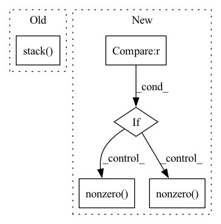

Pattern ID :36184

Before Change
return dense_to_sparse(adj)
else:
idxs = np.nonzero(adj)
edge_index = np.stack(idxs)
edge_weights = adj[idxs]
return edge_index, edge_weights
After Change
assert 2 <= adj.ndim <= 3
assert adj.shape[-1] == adj.shape[-2]
if backend is torch:
adj = torch.transpose(adj, -2, -1)
index = adj.nonzero(as_tuple=True)
else:
adj = np.swapaxes(adj, -2, -1) // transpose
index = adj.nonzero()
edge_attr = adj[index]
if len(index) == 3:
In pattern: SUPERPATTERN
Frequency: 3
Non-data size: 5
Instances
Fragment ID: 102625469
Project Name: torchspatiotemporal/tsl
Commit Name: f28e5a2fddc34eeb90a13c113512c8ab12b6138b
Time: 2022-07-20
Author: ivan.marisca@hotmail.it
File Name: tsl/ops/connectivity.py
M Class Name: AnonimousClass
N Class Name: AnonimousClass
M Method Name: adj_to_edge_index(2)
N Method Name: adj_to_edge_index(1)
M Parent Class:
N Parent Class:
M File Name: tsl/ops/connectivity.py
N File Name: tsl/ops/connectivity.py
M Start Line: 92
M End Line: 114
N Start Line: 106
N End Line: 145
'>
Before Change
// See paper p13
thetas = torch.arange(self.n_heads, dtype=torch.float32) * (2.0 * math.pi / self.n_heads)
grid_init = torch.stack([thetas.cos(), thetas.sin(), thetas.cos()], -1) // TODO
// [NumHeads, FeatureLevels, NumPoints, Offset]
grid_init = (grid_init / grid_init.abs().max(-1, keepdim=True)[0]).view(self.n_heads, 1, 1, 3).repeat(1, self.n_levels, self.n_points, 1)
After Change
// See paper p13
grid_init = torch.cartesian_prod(torch.tensor([-1, 0, 1]), torch.tensor([-1, 0, 1]), torch.tensor([-1, 0, 1])).to(dtype=torch.float32)
if self.n_heads == 26: // sample in 26 directions
grid_init = grid_init[torch.nonzero(torch.abs(grid_init).sum(dim=1)).squeeze()] // Get rid of origin
elif self.n_heads == 6: // sample in 6 directions
grid_init = grid_init[torch.nonzero(torch.logical_and(torch.abs(grid_init).sum(dim=1) < 2, torch.abs(grid_init).sum(dim=1) > 0)).squeeze()]
else:
raise ValueError("Only nheads of value 26 or 6 are supported.")
'>
Fragment ID: 102625465
Project Name: bwittmann/transoar
Commit Name: fa86cda78f79e61cc6617f73268e684f56636b3f
Time: 2021-12-16
Author: bastian.wittmann@tum.de
File Name: transoar/models/ops/modules/ms_deform_attn.py
M Class Name: MSDeformAttn
N Class Name: MSDeformAttn
M Method Name: _reset_parameters(1)
N Method Name: _reset_parameters(1)
M Parent Class: nn.Module
N Parent Class: nn.Module
M File Name: transoar/models/ops/modules/ms_deform_attn.py
N File Name: transoar/models/ops/modules/ms_deform_attn.py
M Start Line: 66
M End Line: 70
N Start Line: 66
N End Line: 75
'>
Before Change
return dense_to_sparse(adj)
else:
idxs = np.nonzero(adj)
edge_index = np.stack(idxs)
edge_weights = adj[idxs]
return edge_index, edge_weights
After Change
assert 2 <= adj.ndim <= 3
assert adj.shape[-1] == adj.shape[-2]
if backend is torch:
adj = torch.transpose(adj, -2, -1)
index = adj.nonzero(as_tuple=True)
else:
adj = np.swapaxes(adj, -2, -1) // transpose
index = adj.nonzero()
edge_attr = adj[index]
if len(index) == 3:
'>
Fragment ID: 102625460
Project Name: torchspatiotemporal/tsl
Commit Name: 50089afdf23de12eb6d11e9d5e7e64d949d45611
Time: 2022-08-18
Author: ivan.marisca@hotmail.it
File Name: tsl/ops/connectivity.py
M Class Name: AnonimousClass
N Class Name: AnonimousClass
M Method Name: adj_to_edge_index(2)
N Method Name: adj_to_edge_index(1)
M Parent Class:
N Parent Class:
M File Name: tsl/ops/connectivity.py
N File Name: tsl/ops/connectivity.py
M Start Line: 92
M End Line: 114
N Start Line: 106
N End Line: 145